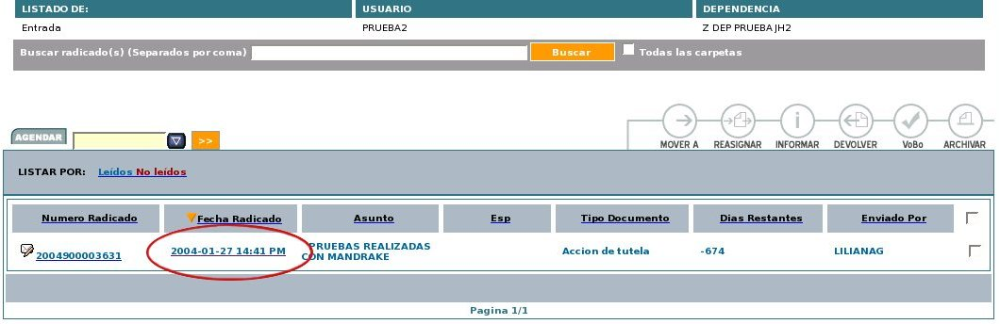
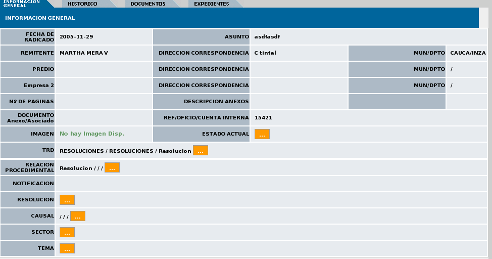
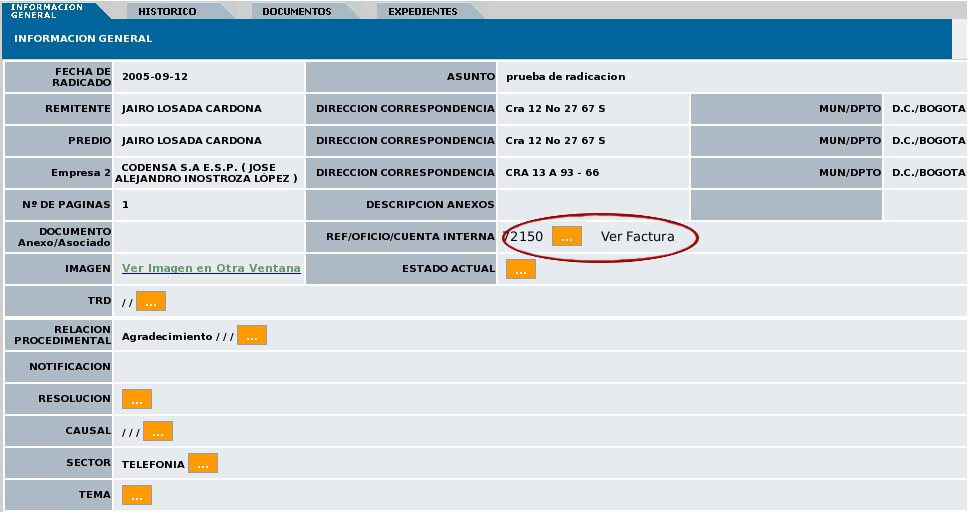

3.1.1.1.
El actor debe haber ingresado al sistema
3.1.1.2. El usuario tiene asignado
radicados en alguna de sus carpetas
3.1.1.3. El usuario se encuentra ubicado
en una carpeta
3.1.1.4. El radicado tiene grabado
Cuenta Interna
1.
A:
INICIO -
Selecciona
el radicado ingresando por
la fecha de
radicación de un
radicado

2. S: Despliega la información
general del radicado
seleccionado con los datos grabados en el proceso de radicación.

3. A: Realiza el caso de uso
Tipificar Sector, selecciona el sector “TELEFONIA”
y presiona el botón
“Grabar
Cambio”
4. S: Realiza el cambio de Sector en la base de datos y presenta
un botón al lado de “Ref/Oficio/Cuenta Interna” que indica
“Ver factura”

5. A: Selecciona el botón Ver Facturas
6. S: Despliega la información de la facturación de la
cuenta interna del
usuario, correspondiente al mes de radicado el documento, mas los 2
meses anteriores, con la información de:
Empresa
Municipio
Departamento
Número telefónico
Periodo
Dirección
Uso:Residencial (1) No residencial (2)
Estrato
Un diagrama de barras donde se realiza la comparación de la
facturación de los meses presentados.
Un botón direccionado a consulta especializada de SUI
Un botón para cerrar la ventana.